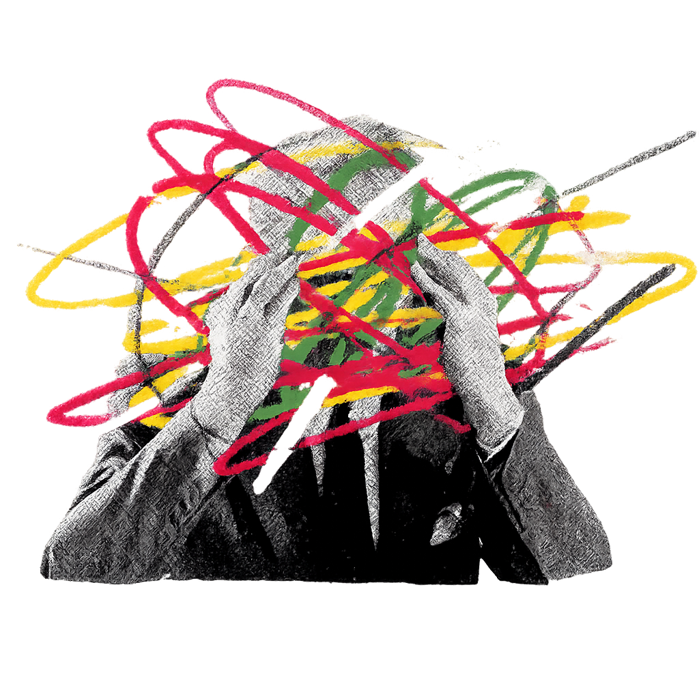

Consistent. Controlled. Focused.
EMDR is a widely used approach for processing trauma through guided bilateral stimulation.
This tool provides therapists with a simple, real-time visual aid for delivering consistent eye movement stimuli during sessions. With adjustable speed and smooth motion, it helps maintain rhythm and reduces the need for manual guidance.
Simple tools. Better focus.
Start a session